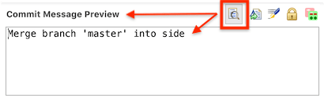
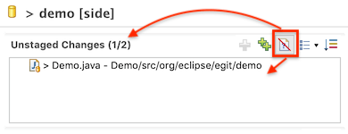
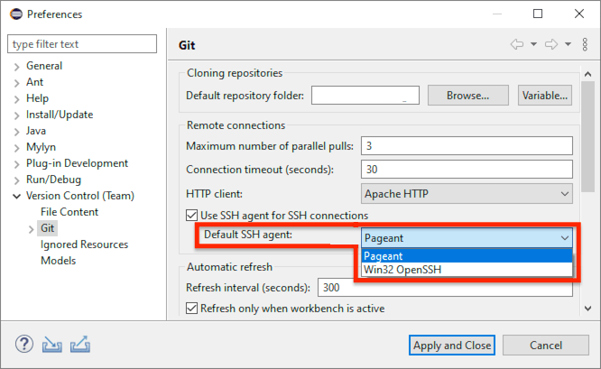

| EGit 6.1 New and Noteworthy | ||
|---|---|---|
|
|
||
| Contributors | ||
EGit 6.1 has full support for git config commit.cleanup. This changes the behavior in the UI from previous EGit versions. Previously, EGit used the text the user entered as-is as commit message (except when squashing commits, where it did already remove comment lines). EGit 6.1 now always cleans up commit messages as specified by the git config commit.cleanup. The default setting is "strip", which means to remove comment lines, trailing whitespace, leading and trailing empty lines, and to collapse multiple consecutive empty lines to a single one.
A comment line in a commit message is a line that has a # as the first non-whitespace character. Beware of this if you have the habit to start commit message lines with a hash (for instance, to use an issue reference of Github or similar git servers): A commit message line like "#123 Fix the furtible gobble" is a comment line and will be removed! To avoid this, let the line start with some other character, for instance, write "Issue #123: ..." or "[#123] ...", or place the issue number at the end. (Or on Github, don't put the issue number in the commit title at all and have a body line like "Fixes #123", which on Github will close the issue when the commit is merged.)
EGit 6.1 comes with two UI features to help users with this behavioral change. First, wherever the user can edit a commit message, comment lines are colored differently.
The green lines are comments, and will be removed before making the commit. The color is configurable in the color preferences of Eclipse at Preferences→General→Appearance→Colors and Fonts in the "Git" section.
Second, there is a new "preview" button for the commit message. When activated, it shows a read-only view of the final commit message.

This preview shows the final verbatim commit message that will be used. (A Gerrit Change-Id of all zeroes will still be replaced upon commit.)
Fetching pull requests has been enabled also for Gitea servers. By default, the command Fetch Gitea Pull Request... is enabled if the host of a remote URI is "gitea.com". For self-hosted installations running at other host names, define custom host name patterns at Preferences→Version Control (Team)→Git→Servers.
The Open in Commit Viewer command is now also available on branches and tags shown in the Git Repositories view.
The Commit & Push button in the Git Staging view newly also takes into account the branch.<name>.merge git configuration. This configuration defines an upstream branch to push to; if not set, EGit will push to an upstream branch with the same name as the currently checked-out local branch. Commit & Push also ensures that it only pushes the currently checked-out branch, even if the git remote configuration has a push Refspec that would result in pushing several branches.
The view of the unstaged files has a new button to show or hide untracked files:

By default, untracked files are shown. When the button is selected, untracked files are hidden.

The title of the unstaged view shows the number of visible items and the total number of items, for instance, "(1/2)": one file of two is visible, one is filtered out from the view.
When the input for the Git Staging view changes to a different repository, the button is reset and untracked files are shown again.
The Push to Upstream command has been improved to take into account more of the git configuration to figure out what to push where.
Previously, it would push either whatever was defined in git config remote.<name>.push, or if nothing was configured there, it would push the current branch to an upstream branch of the same name.
This behavior was sometimes a bit strange. First, if the remote had a push Refspec with wildcards (or several push refspecs), the command would push several branches, not just the currently checked out branch. Second, if the currently checked out branch did have an upstream branch configured vis git config branch.<name>.merge, this was not honored.
In EGit 6.1, the Push to Upstream command now considers also git configs branch.<name>.pushRemote and remote.pushDefault, and also push.default. If push.default is "simple" (which is the git default) or "upstream", it will also honor a branch.<name>.merge configuration (unless the remote has a push Refspec, which takes precedence).
The command newly shows a dialog to configure the push if the git configuration for pushing is incomplete or ambiguous. It also shows a warning dialog when the git configuration would result in more than one branch being pushed.
The Push to Upstream command corresponds to a simple git push on the command-line. To perform the equivalent of git push <remote> <branch>, use the Push Branch... command.
On Windows, JGit 6.1 supports not only Pageant or gpg-agent running in Pageant mode, but newly also Win32-OpenSSH, the OpenSSH port from Microsoft that is included in modern Windows.
EGit 6.1 on Windows has an enhanced SSH agent preference where the user can define which SSH agent, if running, should be used by default if nothing is specified via the IdentityAgent setting in the SSH configuration file ~/.ssh/config.

Note that the choice between "Pageant" and "Win32-OpenSSH" applies only if the SSH configuration file doesn't specify anything else; it can be overridden by the IdentityAgent configuration setting. The setting for "Use SSH agent for SSH connections", on the other hand, is a global master switch, and switches off SSH agent use no matter what the SSH configuration file says. SSH configurations related to SSH agents are considered only if this setting is switched on.
On Linux or OS X, the choice preference is not shown since there is only one communication mechanism with SSH agents (via a Unix domain socket, normally provided via environment variable SSH_AUTH_SOCK). Using this environment variable is the single default.
See also the JGit description of SSH agent support for additional details.
The complete list of new features and bug fixes is available in the release notes.
|
|
||
| Contributors |